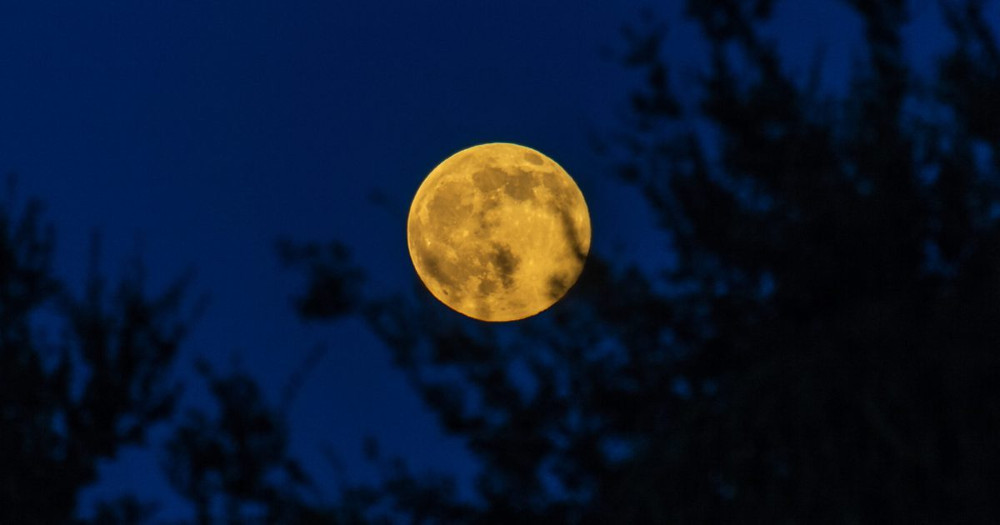

Календарь полнолуния на 2026 год: когда можно увидеть полнолуние и фазы
Явление Полнолуния возникает, когда наша планета, Земля, точно зажата между Солнцем и Луной.
Это выравнивание гарантирует, что вся сторона Луны, которая обращена к нам, светится под солнечным светом.
Благодаря орбите Луны вокруг Земли, угол солнечного света, падающего на лунную поверхность и отражающегося обратно к Лунному календарю.
Продолжить чтение "Календарь Полнолуния 2026 года: Когда увидеть Полнолуние и фазы" Календарь Полнолуния после 2026 года: Когда увидеть